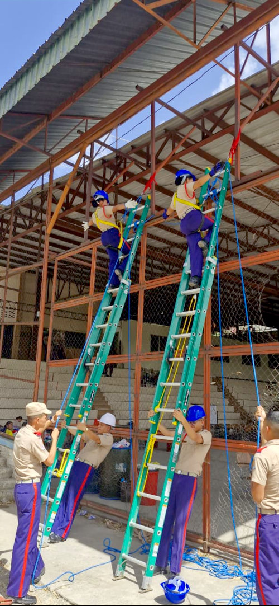
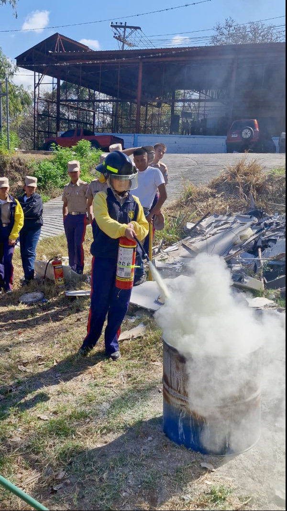
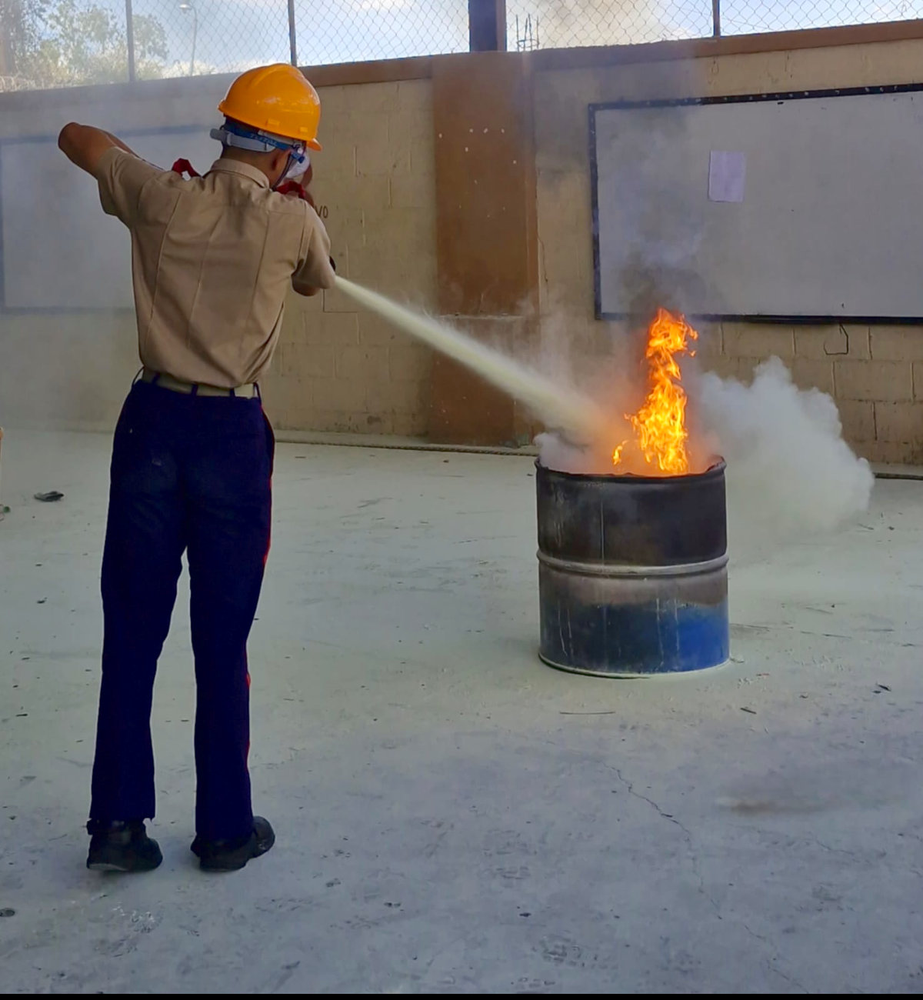
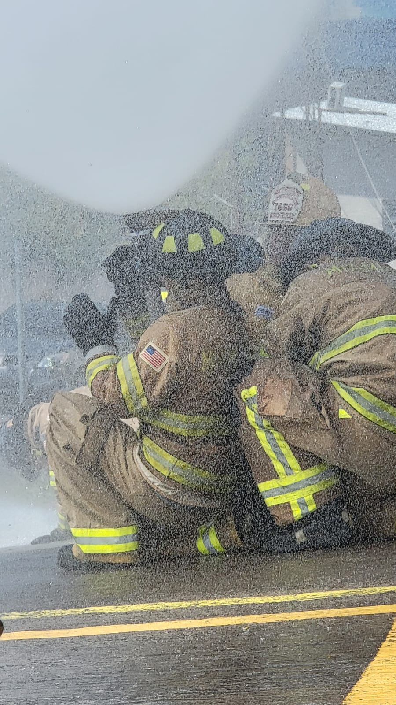
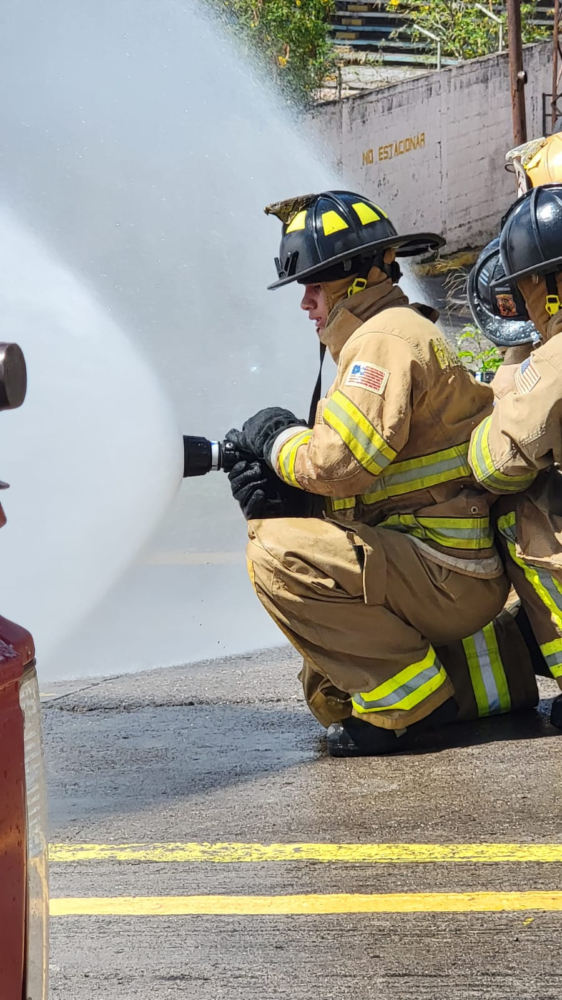
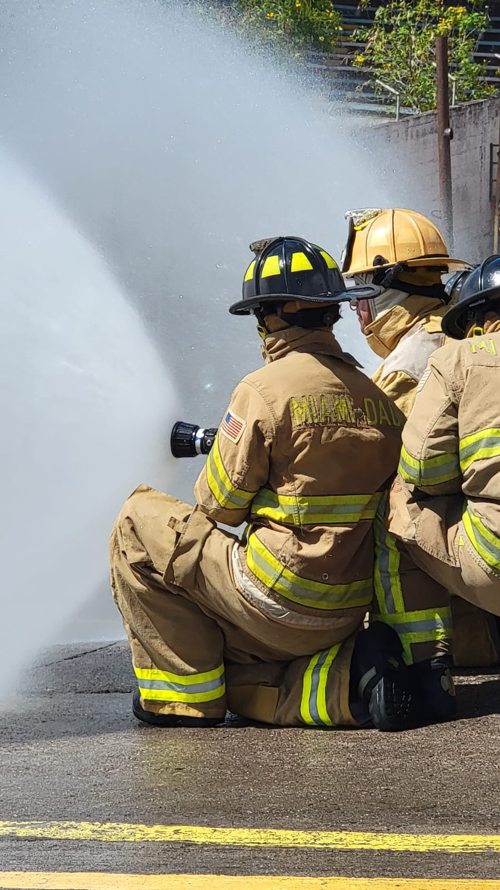

Dominar el fuego requiere más que valor; exige técnica y control absoluto sobre la fuerza hidráulica. Los alumnos de duodécimo grado se enfrentaron al desafío de las líneas de ataque de alta presión, transformando el agua en su principal herramienta estratégica durante la extinción de un incendio.
No se trata solo de sostener una manguera, sino de entender la física detrás de cada chorro. En esta jornada, los alumnos del BTPB perfeccionaron la maniobrabilidad en binomios y la transición entre patrones de neblina para protección y chorros sólidos para penetración. Esta destreza técnica es lo que separa una respuesta ordinaria de una operación de rescate exitosa, garantizando que el equipo pueda avanzar incluso en las condiciones más hostiles.
Asi mismo se perfeccionaron las técnicas para el manejo de extintores portátiles, con el fin de que los alumnos puedan actuar de manera rápida y eficaz en incendios incipientes, evitando su propagación y garantizando la seguridad de las personas y las instalaciones.
¡El arte del Control! 👨🚒





